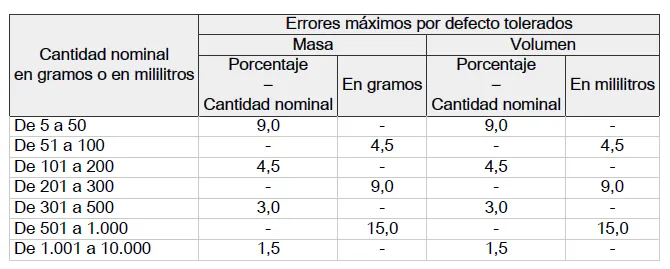
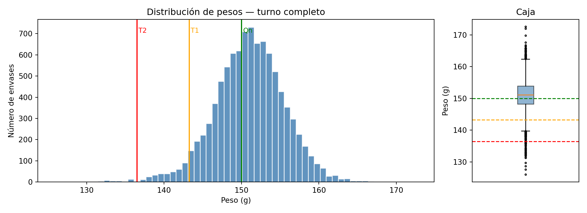
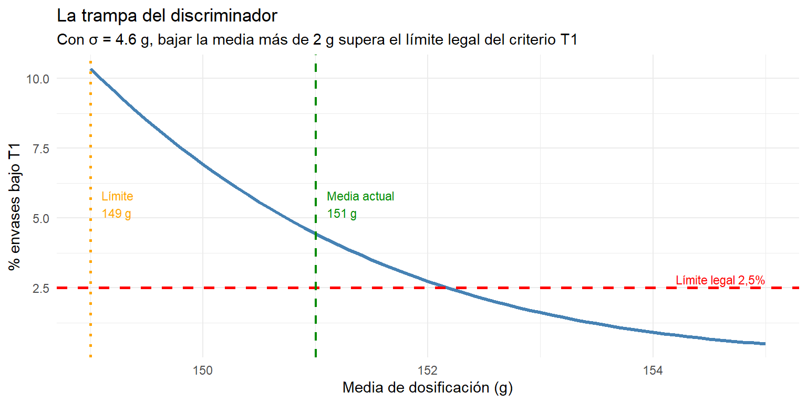
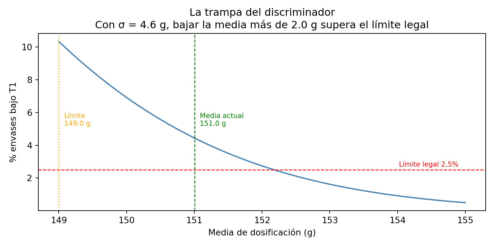
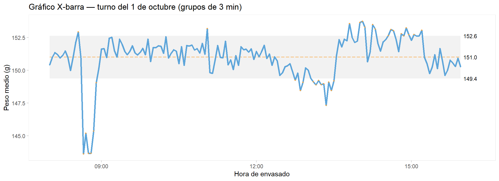
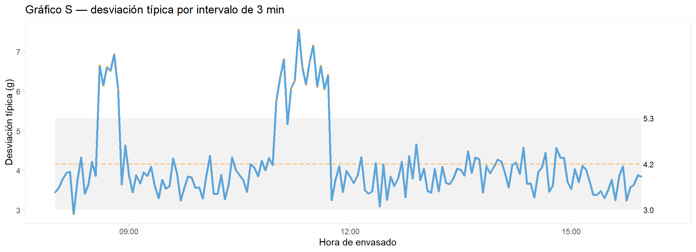
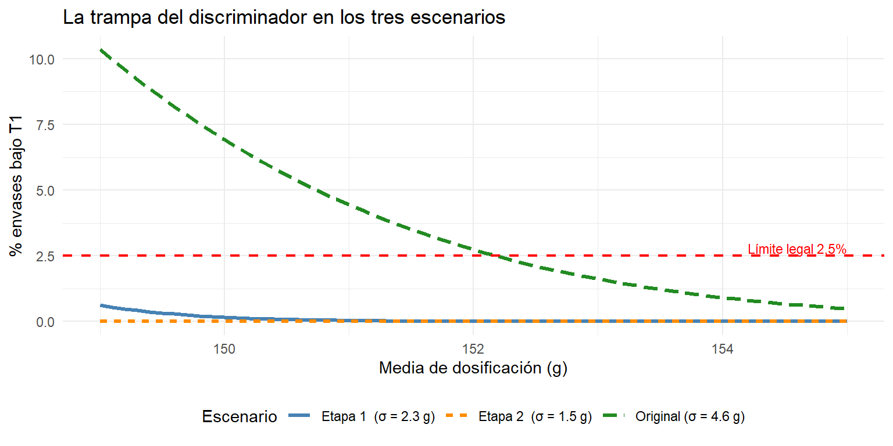
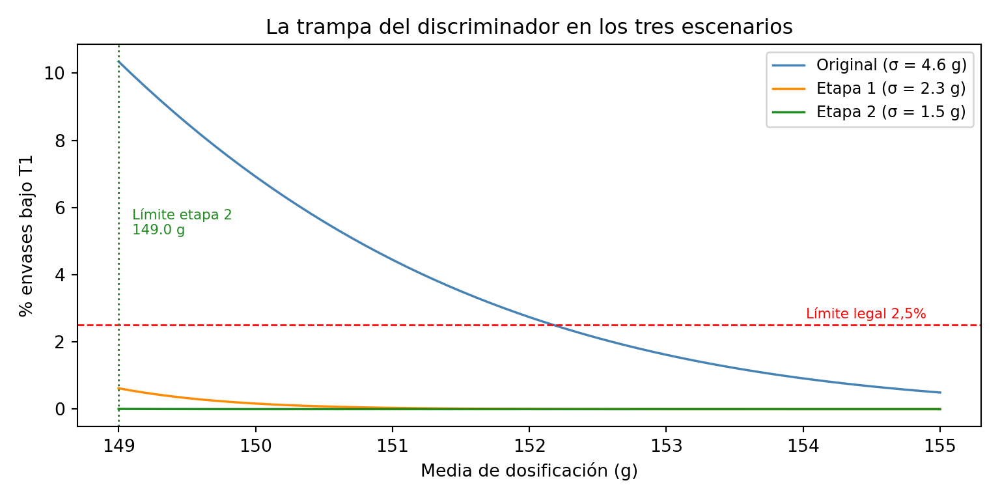

17Proceso de dosificación y control de peso en el envasado
Aplicación práctica del RD 1801/2008 de contenido efectivo
NotaObjetivos de aprendizaje
Al finalizar este capítulo, el alumno será capaz de:
Identificar los conceptos clave del RD 1801/2008: peso nominal, EMDT, límites T1 y T2.
Analizar un lote de producción y determinar su conformidad con la norma.
Explicar la función y las limitaciones del discriminador de peso como medida de control.
Identificar las causas de variabilidad de un proceso de envasado mediante el análisis 5M.
Simular el efecto de planes de mejora sobre la distribución de pesos y cuantificar el ahorro económico.
Conceptos clave: contenido efectivo, peso nominal, EMDT, T1, T2, sobredosificación, discriminador de peso, capacidad de proceso, variabilidad especial, variabilidad común.
AdvertenciaConocimientos previos necesarios
Este capítulo aplica herramientas de los capítulos anteriores: estadísticos descriptivos (cap. 6), distribución normal (cap. 7), exploración gráfica (cap. 5) y control estadístico de procesos — gráficos de control y capacidad de proceso (cap. 9). Conviene tenerlos a mano.
TipSobre el código de este capítulo
Los bloques de código que generan gráficos complejos aparecen ocultos por defecto. Puedes mostrarlos haciendo clic en «Mostrar código». Si quieres entender qué hace un bloque, cópialo y pégalo en un asistente de IA como Claude y pregúntale: «Explícame este código línea a línea, en lenguaje sencillo».
Algunos bloques de código generan los gráficos que se han estudiado, aplicados al dataset actual, con algunas modificaciones estéticas adicionales; otros bloques presentan gráficos necesarios para la explicación que se sigue en el texto, y tienen una realización más compleja que los gráficos básicos. Se incluye también el código oculto de estos bloques para revisarlo en caso de interés
17.1 Introducción
En la industria alimentaria es frecuente que el fabricante comercialice sus productos en envases individuales con un peso declarado en la etiqueta: un yogur de 125 g, un queso fresco de 500 g, una nata de 200 ml. El consumidor confía en que el contenido real coincide con lo que promete la etiqueta.
Ningún proceso de llenado industrial es perfecto. Siempre existe una dispersión natural alrededor del valor objetivo: unos envases pesarán un poco más, otros un poco menos. La pregunta no es si hay variabilidad —la hay siempre— sino cuánta variabilidad es aceptable y cómo se gestiona.
El Real Decreto 1801/2008 responde a esa pregunta. No exige que cada envase pese exactamente lo declarado, sino que define unas tolerancias estadísticas que el fabricante debe cumplir mediante el control del proceso. Entregar menos peso del permitido es un fraude sancionable. Entregar peso por encima del nominal tiene un coste económico: se está regalando producto.
Este capítulo usa el dataset de un turno completo de envasado de yogures de 150 g para recorrer el ciclo completo: entender qué exige la norma, diagnosticar el proceso, identificar las causas de variabilidad y cuantificar el impacto económico de las mejoras.
17.2 Dos formas de declarar el peso
Un fabricante que comercializa productos a peso fijo puede acogerse a dos modalidades diferentes:
Sin signo de estimación. El fabricante declara el peso nominal en la etiqueta pero no se acoge al sistema de control estadístico de la norma. En este caso debe garantizar que todos y cada uno de sus envases contienen como mínimo el peso declarado — sin excepciones, sin tolerancias. No puede mostrar el signo ℮ en el etiquetado. Es una opción válida pero exigente en la práctica: cualquier envase por debajo del nominal es un incumplimiento.
Bajo la norma de contenido efectivo (signo ℮). El fabricante realiza controles estadísticos de peso en cada lote siguiendo el procedimiento especificado en el Real Decreto RD 1801/2008. A cambio, la norma le permite trabajar con tolerancias: un pequeño porcentaje de envases puede estar por debajo del nominal, dentro de los límites que se describen a continuación. Puede imprimir el signo ℮ en el etiquetado, que funciona como certificación de cumplimiento y facilita la libre circulación del producto en el mercado europeo. La inmensa mayoría de las empresas del sector alimentario trabajan bajo la segunda modalidad. El resto de este capítulo se centra en ella.
El signo de estimación ℮
Los envases cuyo proceso de llenado cumple las modalidades de control estadístico del RD pueden llevar impreso el signo ℮ en el etiquetado. Este símbolo certifica, bajo responsabilidad del envasador, que el producto cumple con las disposiciones del real decreto y actúa como «pasaporte» para la libre circulación del producto en el mercado europeo.
El signo ℮ certifica el cumplimiento del RD 1801/2008
17.3 El RD 1801/2008: qué exige la norma
Los conceptos clave
Cantidad nominal (\(Q_n\)): el peso o volumen declarado en el envase. Para nuestro caso, \(Q_n = 150\) g.
Error máximo por defecto tolerado (EMDT): la diferencia máxima permitida entre el peso declarado y el contenido real del envase. No es un valor fijo: depende del rango de peso nominal según el Cuadro 1 del RD.

Cuadro 1 del RD 1801/2008: errores máximos por defecto tolerados
Para un yogur de 150 g (rango 101-200 g), el EMDT es el 4,5% del peso nominal, redondeado por exceso a la décima de gramo:
Un solo envase por debajo de T2 en la muestra de inspección da lugar al rechazo inmediato del lote.
NotaResumen de límites para yogur de 150 g
Concepto
Valor
Peso nominal (\(Q_n\))
150,00 g
EMDT (4,5%)
6,75 g
Límite T1 — envase deficiente
143,25 g
Límite T2 — envase no conforme
136,50 g
Máximo de envases bajo T1
2,5% del lote
Envases bajo T2
0 (ninguno permitido)
Los límites T1 y T2 sobre la curva normal del proceso
AdvertenciaLas tres reglas del envasador
Para que un lote sea conforme, deben cumplirse simultáneamente los tres criterios:
Criterio de la media: el peso medio del lote no puede ser inferior a \(Q_n\).
Criterio T1: la proporción de envases deficientes (por debajo de T1) debe ser inferior al 2,5% del lote.
Criterio T2: ningún envase puede estar por debajo de T2. Un solo envase no conforme rechaza el lote.
El procedimiento de muestreo
La norma no evalúa el cumplimiento envase a envase, sino mediante muestreo estadístico del lote. Para un lote de más de 3.200 unidades —el caso habitual en una línea de yogures con un turno completo de producción— el procedimiento es el siguiente:
Primera etapa: se toman 80 envases al azar. El lote se acepta directamente si no hay ningún envase bajo T2 y hay 3 o menos bajo T1. Se rechaza directamente si hay alguno bajo T2 o 7 o más bajo T1. Si el número de envases bajo T1 está entre 4 y 6, se pasa a la segunda etapa.
Segunda etapa: se toman otros 80 envases y se acumulan con los de la primera (160 en total). El lote se acepta si no hay ninguno bajo T2 y hay 8 o menos bajo T1. Se rechaza si hay alguno bajo T2 o 9 o más bajo T1.
Etapa
Muestra
Aceptación
Rechazo
1.ª
80 uds
≤ 3 bajo T1 y 0 bajo T2
≥ 7 bajo T1 o ≥ 1 bajo T2
1.ª + 2.ª
160 uds
≤ 8 bajo T1 y 0 bajo T2
≥ 9 bajo T1 o ≥ 1 bajo T2
AdvertenciaRechazo: basta una condición. Aceptación: deben cumplirse las dos
Para rechazar el lote basta con que se cumpla cualquiera de las dos condiciones de rechazo. Para aceptar deben cumplirse las dos condiciones simultáneamente. Es un criterio conservador que protege al consumidor.
17.4 Análisis del lote: el turno del 1 de octubre
Disponemos del registro de pesos de un turno completo de envasado de yogures de 150 g: 9.600 envases producidos entre las 08:00 y las 16:00, con un envase cada 3 segundos. El fichero simulacion_envasado_yogur.csv contiene la hora de envasado, el número de envase, el subgrupo de control (grupos de 5 envases) y el peso en gramos.
print(f"Envases bajo T1 : {(df['peso_g'] < T1).sum()} "f"({(df['peso_g'] < T1).mean()*100:.2f}%)")
Envases bajo T1 : 422 (4.40%)
Código
print(f"Envases bajo T2 : {(df['peso_g'] < T2).sum()}")
Envases bajo T2 : 47
El peso medio es de 152,1 g, con una desviación típica de 3,7 g. El mínimo registrado es 129,7 g — muy por debajo de T2 — y el máximo 170,8 g. Ya en estos números se intuye un proceso con variabilidad importante.
{'whiskers': [<matplotlib.lines.Line2D object at 0x00000250AE83EAD0>, <matplotlib.lines.Line2D object at 0x00000250AE83EC10>], 'caps': [<matplotlib.lines.Line2D object at 0x00000250AE83ED50>, <matplotlib.lines.Line2D object at 0x00000250AE83EE90>], 'boxes': [<matplotlib.patches.PathPatch object at 0x00000250AE79A7B0>], 'medians': [<matplotlib.lines.Line2D object at 0x00000250AE83EFD0>], 'fliers': [<matplotlib.lines.Line2D object at 0x00000250AE83F110>], 'means': []}
Código
for val, col in [(Qn, "green"), (T1, "orange"), (T2, "red")]: ax2.axhline(val, color=col, linewidth=1.2, linestyle="--")ax2.set_ylabel("Peso (g)")ax2.set_title("Caja")ax2.set_xticks([])
[]
Código
plt.tight_layout()plt.show()

La distribución es aproximadamente normal pero con una cola izquierda pronunciada: hay un grupo de envases con pesos muy bajos que deforman la distribución. El diagrama de caja los señala claramente como valores atípicos por debajo de T2.
El muestreo del RD: la herramienta de la inspección
El muestreo que define el RD es la herramienta que usa la inspección externa —el inspector de consumo, el auditor de calidad— para evaluar si un lote es conforme. No es la herramienta con la que el fabricante toma decisiones sobre su proceso: el fabricante conoce su proceso mejor que nadie y no necesita esperar a un muestreo para saber que tiene envases bajo T2. Lo ha visto en el gráfico de control.
Aun así, es importante entender qué detecta y qué no detecta el muestreo, porque condiciona el razonamiento de muchos responsables de producción. Aplicamos el procedimiento sobre nuestro lote:
if bajo_T2_m1 >=1:print("→ RECHAZO DIRECTO: envase(s) bajo T2")elif bajo_T1_m1 >=7:print("→ RECHAZO DIRECTO: demasiados envases bajo T1")elif bajo_T1_m1 <=3:print("→ ACEPTACIÓN en primera etapa")else: resto = df["peso_g"].values[~np.isin(df["peso_g"].values, muestra_1)] muestra_2 = rng.choice(resto, size=80, replace=False) total = np.concatenate([muestra_1, muestra_2])print("→ Zona de duda: segunda etapa")print(f"\n=== SEGUNDA ETAPA (n acumulado = 160) ===")print(f"Envases bajo T2 : {(total < T2).sum()}")print(f"Envases bajo T1 : {(total < T1).sum()}")if (total < T2).sum() >=1or (total < T1).sum() >=9:print("→ RECHAZO del lote")else:print("→ ACEPTACIÓN del lote")
→ ACEPTACIÓN en primera etapa
Código
print(f"\n=== CRITERIO DE LA MEDIA ===")
=== CRITERIO DE LA MEDIA ===
Código
media_lote = df["peso_g"].mean()print(f"Media del lote : {media_lote:.2f} g →","CUMPLE"if media_lote >= Qn else"NO CUMPLE")
Media del lote : 151.00 g → CUMPLE
El resultado más probable es que el lote pase la inspección, a pesar de que sabemos que contiene 47 envases bajo T2 y 422 bajo T1. Esto no es un error: es una característica inherente al control estadístico por muestreo. El sistema del RD está diseñado para detectar lotes con proporciones altas de defectuosos — situaciones de fallo grave. Para proporciones pequeñas como la nuestra (0,5% bajo T2), una muestra de 80 unidades tiene menos de un 30% de probabilidad de capturar alguno.
El razonamiento del fabricante “pragmático”
Un responsable de producción que ve este resultado puede llegar a la siguiente conclusión: si el muestreo acepta el lote, no tengo ningún incentivo inmediato para invertir en un discriminador. Sé que tengo algunos T2, pero la probabilidad de que los detecten en una inspección es muy baja. Puedo seguir como estoy y trabajar en la mejora del proceso a largo plazo.
Es un razonamiento que existe en la práctica, y merece una respuesta en dos niveles.
El nivel legal. El RD no dice “si te pillan”. El artículo 14 responsabiliza al envasador de que su proceso cumpla, y le obliga a tener documentación de sus controles disponible para la inspección. Un inspector que encuentra un envase bajo T2 en el punto de venta —no en la planta, sino en el supermercado— puede iniciar un expediente sancionador independientemente de que el muestreo de producción fuera correcto. La inspección puede ocurrir en cualquier punto de la cadena de distribución, y el fabricante no controla cuándo ni dónde.
El nivel económico. Este argumento es más contundente para un técnico de planta, porque se traduce directamente en euros. Un proceso con σ = 4,6 g no solo produce envases de 130 g — también produce envases de 170 g. La variabilidad actúa en los dos extremos. Cada gramo que se dosifica por encima del objetivo para “cubrir” la cola izquierda es producto que se regala al consumidor sin cobrar por ello. El coste de la sobredosificación — que calcularemos en detalle más adelante — es continuo, silencioso y muy superior al coste del discriminador y de las acciones de mejora.
NotaLa variabilidad tiene coste en los dos extremos
Un proceso que produce envases de 130 g también produce envases de 170 g. Para evitar los primeros, el fabricante sube la media de dosificación — y con ello regala más producto en cada envase del extremo alto. Reducir la variabilidad es la única forma de escapar de ese dilema: permite bajar la media sin arriesgar el incumplimiento, y ese ahorro es cuantificable turno a turno.
17.5 El discriminador de peso: solución inmediata, coste real
Qué es y cómo funciona
Un discriminador de peso es un sistema de control en línea que pesa cada envase individualmente a la salida de la llenadora y expulsa automáticamente los que no cumplen el criterio configurado. A diferencia del muestreo del RD —que evalúa una muestra del lote al final— el discriminador actúa envase a envase durante la producción: es la única herramienta que garantiza que ningún T2 salga de la línea. En la práctica se configura para rechazar con seguridad los envases por debajo de T2. La detección de envases en la zona entre T2 y T1 es menos fiable: la precisión del equipo en esa banda es limitada y la tasa de detección real rara vez supera el 70-80%.
La trampa de bajar la media con el discriminador instalado
Una vez instalado el discriminador, los envases bajo T2 desaparecen de la línea y el lote pasa el control. La reacción habitual en planta es inmediata: si ya no hay rechazos T2, podemos bajar un poco el peso medio y recuperar producto.
El razonamiento parece lógico, pero esconde una trampa. Al bajar la media con la misma σ alta, el área bajo la curva entre T2 y T1 crece rápidamente. El discriminador elimina los T2, pero no los T1 — y el porcentaje de envases en esa zona puede superar el 2,5% permitido antes de lo que parece.
La gráfica siguiente lo muestra: para cada valor posible de la media de dosificación, calcula el porcentaje esperado de envases bajo T1 usando la distribución normal con la σ actual del proceso (4,6 g):
sigma_actual <-sd(df$peso_g)medias_posibles <-seq(149, 155, by =0.1)pct_T1 <-pnorm(T1, mean = medias_posibles,sd = sigma_actual) *100media_limite <- medias_posibles[which(pct_T1 >=2.5)[1]]df_trampa <-data.frame(media = medias_posibles, pct = pct_T1)ggplot(df_trampa, aes(x = media, y = pct)) +geom_line(colour ="steelblue", linewidth =1.2) +geom_hline(yintercept =2.5, colour ="red",linetype ="dashed", linewidth =0.9) +geom_vline(xintercept = media_limite, colour ="orange",linetype ="dotted", linewidth =0.9) +geom_vline(xintercept =mean(df$peso_g), colour ="green4",linetype ="dashed", linewidth =0.8) +annotate("text", x =mean(df$peso_g) +0.1, y =5.5,label =paste0("Media actual\n",round(mean(df$peso_g), 1), " g"),colour ="green4", size =3, hjust =0) +annotate("text", x = media_limite +0.1, y =5.5,label =paste0("Límite\n", round(media_limite, 1), " g"),colour ="orange", size =3, hjust =0) +annotate("text", x =155, y =2.8,label ="Límite legal 2,5%",colour ="red", size =3, hjust =1) +labs(title ="La trampa del discriminador",subtitle =paste0("Con σ = ", round(sigma_actual, 1)," g, bajar la media más de ",round(mean(df$peso_g) - media_limite, 1)," g supera el límite legal del criterio T1"),x ="Media de dosificación (g)",y ="% envases bajo T1") +theme_minimal()

Código
from scipy import statssigma_actual = df["peso_g"].std()medias_posibles = np.arange(149, 155.1, 0.1)pct_T1 = stats.norm.cdf(T1, loc=medias_posibles, scale=sigma_actual) *100media_actual = df["peso_g"].mean()media_limite = medias_posibles[np.argmax(pct_T1 >=2.5)]fig, ax = plt.subplots(figsize=(8, 4))ax.plot(medias_posibles, pct_T1, color="steelblue", linewidth=1.5)ax.axhline(2.5, color="red", linestyle="--", linewidth=1)ax.axvline(media_limite, color="orange", linestyle=":", linewidth=1.2)ax.axvline(media_actual, color="green", linestyle="--", linewidth=1)ax.text(media_actual +0.08, 5.2,f"Media actual\n{media_actual:.1f} g", color="green", fontsize=8)ax.text(media_limite +0.08, 5.2,f"Límite\n{media_limite:.1f} g", color="orange", fontsize=8)ax.text(154.9, 2.7, "Límite legal 2,5%", color="red", fontsize=8, ha="right")ax.set_xlabel("Media de dosificación (g)")ax.set_ylabel("% envases bajo T1")ax.set_title(f"La trampa del discriminador\n"f"Con σ = {sigma_actual:.1f} g, bajar la media más de "f"{media_actual - media_limite:.1f} g supera el límite legal")plt.tight_layout()plt.show()

Con una σ de 3,7 g, el margen para bajar la media es de apenas 2 g antes de incumplir el criterio T1. Y esto con el discriminador funcionando y eliminando todos los T2 — sin él, el lote ya estaría rechazado.
NotaEl discriminador: solución inevitable, coste real
El discriminador es en la práctica una solución casi inevitable: mientras se trabaja en reducir la variabilidad del proceso — un trabajo que puede llevar semanas o meses — la línea tiene que seguir produciendo dentro de la norma. El coste de rechazo se trata como un coste fijo asumido, que se incorpora al coste del producto, y, por lo tanto, al precio de venta, reduciendo su competitividad. Lo que rara vez se calcula es cuánto de ese coste es evitable. Cuando se hace ese cálculo — como haremos en las secciones siguientes — el ahorro potencial se convierte en el argumento más sólido para justificar ante la dirección la inversión en las acciones de mejora.
17.6 El proceso de mejora continua para reducir la variabilidad
Etapa 1: estabilizar el proceso
El gráfico de control: identificar las causas especiales
El primer paso del plan de mejora es entender qué ocurrió durante el turno. El gráfico de control X-barra agrupa los envases en intervalos de 3 minutos y representa la media de cada intervalo a lo largo del tiempo. Los puntos fuera de los límites de control señalan momentos en que el proceso dejó de comportarse de forma estable — las causas especiales de variabilidad.
Código
library(qicharts2)df <- df |>mutate(intervalo =floor_date(hora_envasado, "3 minutes"))qic(peso_g,x = intervalo,data = df,chart ="xbar",point.size =0.8,title ="Gráfico X-barra — turno del 1 de octubre (grupos de 3 min)",ylab ="Peso medio (g)",xlab ="Hora de envasado")

Código
qic(peso_g,x = intervalo,data = df,chart ="s",point.size =0.8,title ="Gráfico S — desviación típica por intervalo de 3 min",ylab ="Desviación típica (g)",xlab ="Hora de envasado")

El gráfico revela una historia detallada del turno. Hay siete eventos identificables:
Hora
Evento observable
Tipo
08:30
Deriva ascendente: la media sube ~4 g en 8 min
Causa especial
08:38
Sobrecorrección violenta: la media cae a ~143 g, aparecen envases bajo T2
Causa especial
08:52
Estabilización gradual en ~153 g
—
10:00
Alta variabilidad sostenida 45 min, sin cambio de media
La deriva lenta y progresiva de la media es la firma clásica del desgaste o pérdida de ajuste mecánico. En una llenadora de pistón, puede deberse al desgaste de juntas, variación de la carrera del pistón o cambio en la temperatura del fluido hidráulico. La oscilación rítmica de las 14:00 apunta a una vibración periódica de la bomba de producto.
Plan de acción (Lean — TPM): plan de mantenimiento preventivo con revisión de pistones y juntas cada N turnos; alarmas automáticas cuando la media de tres subgrupos consecutivos supere ±1,5 g respecto al objetivo.
Mano de obra — Sobrecorrección 08:38
El evento más grave del turno. Cuando el operario detectó la deriva ascendente de las 08:30, corrigió en exceso: bajó la dosificación tan agresivamente que la media cayó por debajo de T1, generando los 25 envases bajo T2 que rechazaron el lote. Completamente evitable.
Plan de acción (Lean — trabajo estándar): criterios de actuación escritos con límites de corrección: ajuste máximo de ±0,5 g por intervención, verificación del resultado antes del siguiente paso.
Mano de obra — Escalón brusco 13:30
El cambio brusco coincide con el cambio de turno. El operario entrante ajustó la máquina de forma diferente al saliente, sin protocolo de entrega definido.
Plan de acción (Lean — estandarización): protocolo escrito de cambio de turno con verificación de peso y firma de aceptación antes de liberar la línea.
Material — Alta variabilidad sostenida 10:00-10:45
Un período de variabilidad alta sin cambio de media apunta a material fuera de especificación: probablemente la llegada de un nuevo lote de leche con viscosidad diferente, que afecta al volumen dosificado por pistón.
Plan de acción (Lean — poka-yoke): control de viscosidad en recepción de cada cubeta antes de incorporarla a la línea. Si la viscosidad está fuera del rango aceptado, no se incorpora sin ajuste previo.
Método — Deriva descendente 11:00-12:30
Una deriva relacionada con la hora del turno puede responder a la temperatura del producto: a medida que avanza la mañana, la temperatura en el depósito de alimentación sube, la viscosidad baja y el pistón entrega ligeramente menos masa. Es una causa de método porque no existe un procedimiento de control de temperatura.
Plan de acción: rango de temperatura del producto en el depósito con verificación horaria. A más largo plazo: control automático de temperatura.
TipVariabilidad especial y variabilidad común
Los eventos identificados son causas especiales de variabilidad: tienen causa identificable, son esporádicas y se pueden eliminar con acciones concretas. Una vez eliminadas, el proceso queda con su variabilidad común — la inherente al sistema, que solo se puede reducir con mejoras estructurales más profundas.
Este enfoque de dos etapas — primero estabilizar eliminando causas especiales, después optimizar reduciendo la variabilidad común — es la base de las metodologías Lean y Six Sigma, que estudiaremos en el capítulo 20.
Los índices Cp y Cpk lo confirman: el proceso no es capaz de mantenerse dentro de los límites especificados con la variabilidad actual. La cola izquierda de la distribución se extiende claramente por debajo de T1 y, en los peores momentos del turno, por debajo de T2.
Análisis intermedio: el proceso estabilizado
Una vez implementadas las acciones de la etapa 1, el proceso queda libre de causas especiales. Lo que queda es la variabilidad común: la dispersión inherente al sistema cuando todo funciona correctamente.
Simulamos este escenario manteniendo la misma media objetivo (152,5 g) pero reduciendo la desviación típica a 2,3 g, que es lo esperable de un proceso estabilizado sin mejoras tecnológicas todavía.
La mejora es ya muy visible: la distribución se estrecha significativamente, los envases bajo T2 han desaparecido y los bajo T1 se reducen a una cifra pequeña. El lote ahora cumple los tres criterios.
Con σ = 2,3 g ya hay NA g más de margen que en el proceso original. Es una mejora real, pero todavía limitada: para bajar la media de dosificación de forma significativa hay que abordar la etapa 2.
Etapa 2: reducir la variabilidad común
Las acciones de la etapa 1 han eliminado las causas especiales. La variabilidad que queda — σ ≈ 2,3 g — es la inherente al sistema. Reducirla requiere intervenciones más profundas:
Revisión o sustitución de componentes de la llenadora: si el pistón tiene holguras de fabricación, ningún ajuste operativo las elimina.
Control automático de temperatura del depósito de alimentación: elimina la deriva de viscosidad.
Sistema de pesaje en continuo con retroalimentación automática (feedback control): el equipo ajusta la dosificación de forma continua en función del peso medido, reduciendo la dependencia del ajuste manual.
Simulamos el proceso con σ = 1,5 g — un objetivo alcanzable con estas mejoras — y media ajustada a 151,0 g:
df_trampa3 <-data.frame(media =rep(medias_posibles, 3),pct =c(pnorm(T1, mean = medias_posibles, sd = sigma_actual) *100,pnorm(T1, mean = medias_posibles, sd = sigma_e1) *100,pnorm(T1, mean = medias_posibles, sd = sigma_e2) *100 ),etapa =rep(c(paste0("Original (σ = ", round(sigma_actual, 1), " g)"),paste0("Etapa 1 (σ = ", sigma_e1, " g)"),paste0("Etapa 2 (σ = ", sigma_e2, " g)") ), each =length(medias_posibles)))media_lim_e2 <- medias_posibles[which(pnorm(T1, mean = medias_posibles,sd = sigma_e2) *100>=2.5)[1]]ggplot(df_trampa3, aes(x = media, y = pct,colour = etapa, linetype = etapa)) +geom_line(linewidth =1.1) +geom_hline(yintercept =2.5, colour ="red",linetype ="dashed", linewidth =0.8) +geom_vline(xintercept = media_lim_e2, colour ="forestgreen",linetype ="dotted", linewidth =0.9) +annotate("text", x = media_lim_e2 +0.1, y =5.5,label =paste0("Límite etapa 2\n",round(media_lim_e2, 1), " g"),colour ="forestgreen", size =3, hjust =0) +annotate("text", x =155, y =2.8,label ="Límite legal 2,5%",colour ="red", size =3, hjust =1) +scale_colour_manual(values =c("steelblue", "darkorange", "forestgreen")) +labs(title ="La trampa del discriminador en los tres escenarios",x ="Media de dosificación (g)", y ="% envases bajo T1",colour ="Escenario", linetype ="Escenario") +theme_minimal() +theme(legend.position ="bottom")

Código
pct_e2 = stats.norm.cdf(T1, loc=medias_posibles, scale=sigma_e2) *100lim_e2 = medias_posibles[np.argmax(pct_e2 >=2.5)]fig, ax = plt.subplots(figsize=(8, 4))for pct, lbl, col in [ (pct_original, f"Original (σ = {sigma_actual:.1f} g)", "steelblue"), (pct_e1, f"Etapa 1 (σ = {sigma_e1} g)", "darkorange"), (pct_e2, f"Etapa 2 (σ = {sigma_e2} g)", "forestgreen"),]: ax.plot(medias_posibles, pct, linewidth=1.3, label=lbl, color=col)ax.axhline(2.5, color="red", linestyle="--", linewidth=1)ax.axvline(lim_e2, color="forestgreen", linestyle=":", linewidth=1.1)ax.text(lim_e2 +0.1, 5.2,f"Límite etapa 2\n{lim_e2:.1f} g", color="forestgreen", fontsize=8)ax.text(154.9, 2.7, "Límite legal 2,5%", color="red", fontsize=8, ha="right")ax.set_xlabel("Media de dosificación (g)")ax.set_ylabel("% envases bajo T1")ax.set_title("La trampa del discriminador en los tres escenarios")ax.legend(fontsize=9)plt.tight_layout()plt.show()

Con σ = 1,5 g se puede dosificar hasta NA g sin superar el límite legal. Eso representa NA g menos por envase respecto al proceso original — un margen real que justifica la inversión.
El RD 1801/2008 define tres criterios simultáneos para que un lote de envases sea conforme: la media no puede ser inferior a \(Q_n\), menos del 2,5% de los envases pueden estar bajo T1, y ninguno puede estar bajo T2. Un solo envase bajo T2 en la muestra de inspección rechaza el lote.
La tabla siguiente resume los tres escenarios analizados:
Escenario
Media (g)
σ (g)
% bajo T1
N bajo T2
Conforme
Ahorro/año
Original
151.0
4.6
4.4%
47
NO (T2)
—
Etapa 1: estabilizado
152.5
2.3
0%
0
SÍ
Parcial
Etapa 2: optimizado
151.0
1.5
0%
0
SÍ
12079 €
El camino de mejora tiene dos etapas bien diferenciadas. La primera — eliminar las causas especiales mediante trabajo estándar, protocolos de turno y control de materiales — es rápida y de bajo coste, y ya produce resultados visibles. La segunda — reducir la variabilidad común con mejoras tecnológicas — requiere inversión pero tiene un retorno económico cuantificable y directo.
El discriminador de peso es una herramienta necesaria durante todo el proceso, pero su coste de rechazo disminuye a medida que la variabilidad se reduce. Al final del camino, el discriminador apenas actúa — y eso es exactamente lo que se busca.
Este recorrido — medir, diagnosticar, estabilizar, optimizar — es la lógica que subyace a las metodologías Lean y Six Sigma, que formalizaremos en el capítulo 19.